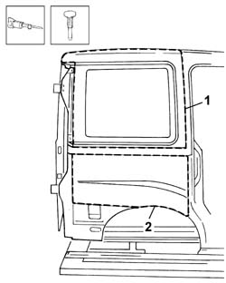
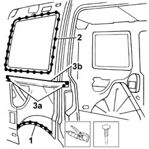
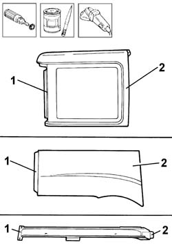
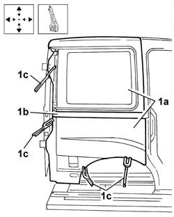
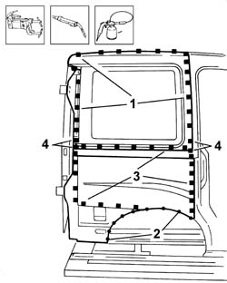
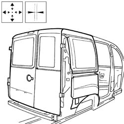

7210e53 Stripping RIGHT REAR WING
- Path
- Procedures > 72 PANELS AND FRAMES > 7210 REMOVING-REFITTING > 7210E external parts > 7210e53 Stripping RIGHT REAR WING
- Kind
- repair procedure (removal / refitting; the operation number is the code)
- Applies to
- all engines; all production periods
- Interactive page
- https://sloeber94.github.io/elrnDB-fDbl/en/#/2585266
Applies to: all engines; all production periods
 Removing
Removing
 Refitting
RefittingCheck if any of the connected parts are deformed by checking body alignment dimensions. Use appropriate measurement tools (reference rigs, templates or gauges).
Straighten the body if necessary.
1. Using a pneumatic saw, cut the upper part of the rear wing trim along the cutting line shown in the diagram.
2. Using a pneumatic saw, cut the lower part of the rear wing trim along the cutting line shown in the diagram.

Applies to: all engines; all production periods
1. Reduce the spot welds along the wheel arch.
2. Eliminate traces of sealant along the edges of the rear window housing.
3. Reduce the spot welds (3a) along sliding door guide (3b), then remove.
Remove the rear wing from the body.

Applies to: all engines; all production periods
Straighten the edges of the panel.
Use a grinding wheel to remove the spot weld residues.
Apply electro-galvanizing paint to the parts which have been ground.
Remove the residues of sealant from areas adjacent to the window housing.
1. Use a rotary brush to remove the corrosion-proofing around the edge of the parts.
2. Apply electro-galvanized paint to the edges of the replacement parts that will come into contact with the frame.

Applies to: all engines; all production periods
Refitting
RemovingApply sealant around the edge of the window housing.
1. Correctly position the replacement rear wing (1a) and sliding side door guide (1b) on the bodyshell and secure it using self-locking clamps (1c).
Check it is properly aligned.

Applies to: all engines; all production periods
1. Weld the upper panel by fill welding along the area shown in the figure.
Apply structural filler along the inner edge in contact with the frame.
2. Weld the replacement lower wing, then use a spot welder to spot weld along the area of contact with the wheel arch.
3. Fill weld the replacement lower part along other areas in contact with the underlying frame.
4. Fill weld the replacement slide guide along the other areas shown.

Applies to: all engines; all production periods
Level the spot welds.
Apply electro-galvanizing paint to the parts which have been ground.
1. Provisionally refit the tail-gate or rear door flaps (1a) (according to version and model examined) and check alignment of rear wing (1b) with connected components.
